DLPFC
Last updated: 2024-12-12
Checks: 7 0
Knit directory: KODAMA-Analysis/
This reproducible R Markdown analysis was created with workflowr (version 1.7.1). The Checks tab describes the reproducibility checks that were applied when the results were created. The Past versions tab lists the development history.
Great! Since the R Markdown file has been committed to the Git repository, you know the exact version of the code that produced these results.
Great job! The global environment was empty. Objects defined in the global environment can affect the analysis in your R Markdown file in unknown ways. For reproduciblity it’s best to always run the code in an empty environment.
The command set.seed(20240618) was run prior to running
the code in the R Markdown file. Setting a seed ensures that any results
that rely on randomness, e.g. subsampling or permutations, are
reproducible.
Great job! Recording the operating system, R version, and package versions is critical for reproducibility.
Nice! There were no cached chunks for this analysis, so you can be confident that you successfully produced the results during this run.
Great job! Using relative paths to the files within your workflowr project makes it easier to run your code on other machines.
Great! You are using Git for version control. Tracking code development and connecting the code version to the results is critical for reproducibility.
The results in this page were generated with repository version 256914f. See the Past versions tab to see a history of the changes made to the R Markdown and HTML files.
Note that you need to be careful to ensure that all relevant files for
the analysis have been committed to Git prior to generating the results
(you can use wflow_publish or
wflow_git_commit). workflowr only checks the R Markdown
file, but you know if there are other scripts or data files that it
depends on. Below is the status of the Git repository when the results
were generated:
Ignored files:
Ignored: .RData
Ignored: .Rhistory
Ignored: .Rproj.user/
Untracked files:
Untracked: KODAMA.svg
Untracked: Rplots.pdf
Untracked: code/Acinar_Cell_Carcinoma.ipynb
Untracked: code/Adenocarcinoma.ipynb
Untracked: code/Adjacent_normal_section.ipynb
Untracked: code/DLFPC_preprocessing.R
Untracked: code/DLPFC - BANKSY.R
Untracked: code/DLPFC - BASS.R
Untracked: code/DLPFC - BAYESPACE.R
Untracked: code/DLPFC - Nonspatial.R
Untracked: code/DLPFC - PRECAST.R
Untracked: code/DLPFC_comparison.R
Untracked: code/DLPFC_results_analysis.R
Untracked: code/VisiumHD-CRC.ipynb
Untracked: data/DLFPC-Br5292-input.RData
Untracked: data/DLFPC-Br5595-input.RData
Untracked: data/DLFPC-Br8100-input.RData
Untracked: data/DLPFC-general.RData
Untracked: data/spots_classification_ALL.csv
Untracked: data/trajectories.RData
Untracked: data/trajectories_VISIUMHD.RData
Untracked: output/BANSKY-results.RData
Untracked: output/BASS-results.RData
Untracked: output/BayesSpace-results.RData
Untracked: output/CRC-image.RData
Untracked: output/CRC-image2.RData
Untracked: output/DLFPC-All.RData
Untracked: output/DLFPC-Br5292.RData
Untracked: output/DLFPC-Br5595.RData
Untracked: output/DLFPC-Br8100.RData
Untracked: output/Figure 1 - boxplot.pdf
Untracked: output/Figure 2 - DLPFC 10.pdf
Untracked: output/KODAMA-results.RData
Untracked: output/MERFISH.RData
Untracked: output/Nonspatial-results.RData
Untracked: output/PRECAST-results.RData
Untracked: output/Prostate.RData
Untracked: output/VisiumHD3.RData
Untracked: output/image.RData
Untracked: remove.RData
Untracked: remove2.RData
Unstaged changes:
Deleted: analysis/DLPFC-12.Rmd
Deleted: analysis/DLPFC-4.Rmd
Deleted: analysis/DLPFC1.Rmd
Deleted: analysis/DLPFC10.Rmd
Deleted: analysis/DLPFC2.Rmd
Deleted: analysis/DLPFC3.Rmd
Deleted: analysis/DLPFC4.Rmd
Deleted: analysis/DLPFC5.Rmd
Deleted: analysis/DLPFC6.Rmd
Deleted: analysis/DLPFC7.Rmd
Deleted: analysis/DLPFC8.Rmd
Deleted: analysis/DLPFC9.Rmd
Modified: analysis/Giotto.Rmd
Deleted: analysis/STARmap.Rmd
Modified: analysis/VisiumHD.Rmd
Note that any generated files, e.g. HTML, png, CSS, etc., are not included in this status report because it is ok for generated content to have uncommitted changes.
These are the previous versions of the repository in which changes were
made to the R Markdown (analysis/Du13.Rmd) and HTML
(docs/Du13.html) files. If you’ve configured a remote Git
repository (see ?wflow_git_remote), click on the hyperlinks
in the table below to view the files as they were in that past version.
| File | Version | Author | Date | Message |
|---|---|---|---|---|
| Rmd | 256914f | Stefano Cacciatore | 2024-12-12 | Start my new project |
| Rmd | dda49e4 | Stefano Cacciatore | 2024-12-11 | Start my new project |
Introduction
Here, we apply KODAMA to analyze the human dorsolateral prefrontal cortex (DLPFC) data by 10x Visium from Maynard et al., 2021. The links to download the raw data and H&E full resolution images can be found in the LieberInstitute/spatialLIBD github page.
Loading the required libraries
library("nnSVG")
library("scater")
library("scran")
library("scry")
library("SPARK")
library("harmony")
library("Seurat")
library("spatialLIBD")
library("KODAMAextra")
library("mclust")
library("slingshot")
library("irlba")Download the dataset
spe <- fetch_data(type = 'spe')Extract the metadata information
n.cores=40
splitting = 100
spatial.resolution = 0.3
aa_noise=3
gene_number=2000
graph = 20
seed=98765
set.seed(seed)
ID=unlist(lapply(strsplit(rownames(colData(spe)),"-"),function(x) x[1]))
samples=colData(spe)$sample_id
rownames(colData(spe))=paste(ID,samples,sep="-")
txtfile=paste(splitting,spatial.resolution,aa_noise,2,gene_number,sep="_")
sample_names=c("151507",
"151508",
"151509",
"151510",
"151669",
"151670",
"151671",
"151672",
"151673",
"151674",
"151675",
"151676")
subject_names= c("Br5292","Br5595", "Br8100")
metaData = SingleCellExperiment::colData(spe)
expr = SingleCellExperiment::counts(spe)
sample_names <- paste0("sample_", unique(colData(spe)$sample_id))
sample_names <- unique(colData(spe)$sample_id)
dim(spe)[1] 33538 47681# identify mitochondrial genes
is_mito <- grepl("(^MT-)|(^mt-)", rowData(spe)$gene_name)
table(is_mito)is_mito
FALSE TRUE
33525 13 # calculate per-spot QC metrics
spe <- addPerCellQC(spe, subsets = list(mito = is_mito))
# select QC thresholds
qc_lib_size <- colData(spe)$sum < 500
qc_detected <- colData(spe)$detected < 250
qc_mito <- colData(spe)$subsets_mito_percent > 30
qc_cell_count <- colData(spe)$cell_count > 12
# spots to discard
discard <- qc_lib_size | qc_detected | qc_mito | qc_cell_count
table(discard)discard
FALSE TRUE
46653 1028 colData(spe)$discard <- discard
# filter low-quality spots
spe <- spe[, !colData(spe)$discard]
dim(spe)[1] 33538 46653spe <- filter_genes(
spe,
filter_genes_ncounts = 2, #ncounts
filter_genes_pcspots = 0.5,
filter_mito = TRUE
)
dim(spe)[1] 6623 46653sel= !is.na(colData(spe)$layer_guess_reordered)
spe = spe[,sel]
dim(spe)[1] 6623 46318spe <- computeLibraryFactors(spe)
spe <- logNormCounts(spe)
subjects=colData(spe)$subject
labels=as.factor(colData(spe)$layer_guess_reordered)
xy=as.matrix(spatialCoords(spe))
samples=colData(spe)$sample_id
cols_cluster <- c("#0000b6", "#81b29a", "#f2cc8f","#e07a5f",
"#cc00b6", "#81ccff", "#33b233")
plot_slide(xy,samples,labels,col=cols_cluster)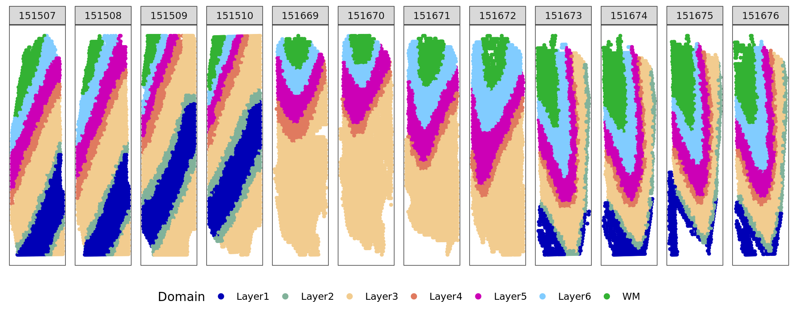
Gene selection
The identification of genes that display spatial expression patterns is performed using the SPARKX method (Zhu et al. (2021)). The genes are ranked based on the median value of the logarithm value of the p-value obtained in each slide individually.
top=multi_SPARKX(spe,n.cores=n.cores)Warning in asMethod(object): sparse->dense coercion: allocating vector of size
2.3 GiBdata=as.matrix(t(logcounts(spe)[top[1:gene_number],]))
samples=colData(spe)$sample_id
labels=as.factor(colData(spe)$layer_guess_reordered)
names(labels)=rownames(colData(spe))
subjects=colData(spe)$subjectPatient Br5595
subject_names="Br5595"
nclusters=5
spe_sub <- spe[, colData(spe)$subject == subject_names]
# subjects=colData(spe_sub)$subject
dim(spe_sub)[1] 6623 14646# spe_sub <- runPCA(spe_sub, 50,subset_row = top[1:gene_number], scale=TRUE)
#pca=reducedDim(spe_sub,type = "PCA")[,1:50]
spe_sub <- spe[, colData(spe)$subject == subject_names]
sel= subjects == subject_names
data_Br5595=data[sel,top[1:gene_number]]
RNA.scaled=scale(data_Br5595)
pca_results <- irlba(A = RNA.scaled, nv = 50)
pca_Br5595 <- pca_results$u %*% diag(pca_results$d)[,1:50]
rownames(pca_Br5595)=rownames(data_Br5595)
colnames(pca_Br5595)=paste("PC",1:50,sep="")
labels=as.factor(colData(spe_sub)$layer_guess_reordered)
names(labels)=rownames(colData(spe_sub))
xy=as.matrix(spatialCoords(spe_sub))
rownames(xy)=rownames(colData(spe_sub))
samples=colData(spe_sub)$sample_id
plot(pca_Br5595, pch=20,col=as.factor(colData(spe_sub)$sample_id))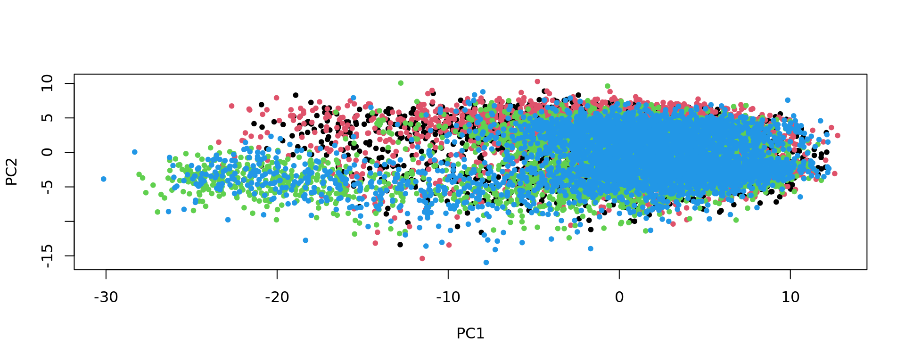
KODAMA analysis
set.seed(seed)
kk=KODAMA.matrix.parallel(pca_Br5595,
spatial = xy,
samples=samples,
FUN= "fastpls" ,
landmarks = 100000,
splitting = splitting,
ncomp = 50,
spatial.resolution = spatial.resolution,
n.cores=n.cores,
seed = seed)Calculating Network
Calculating Network spatial
socket cluster with 40 nodes on host 'localhost'
================================================================================
Finished parallel computation
[1] "Calculation of dissimilarity matrix..."
================================================================================print("KODAMA finished")[1] "KODAMA finished"config=umap.defaults
config$n_threads = n.cores
config$n_sgd_threads = "auto"
kk_UMAP=KODAMA.visualization(kk,method="UMAP",config=config)
plot(kk_UMAP,pch=20,col=as.factor(labels))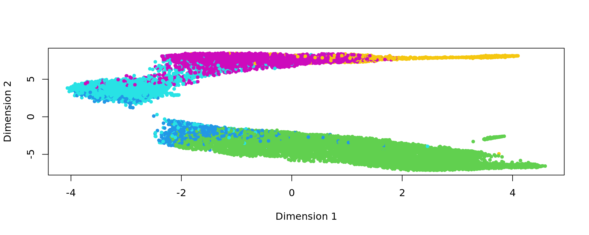
Graph-based clustering
# Graph-based clustering
g <- bluster::makeSNNGraph(as.matrix(kk_UMAP), k = 20)
g_walk <- igraph::cluster_walktrap(g)
clu <- as.character(igraph::cut_at(g_walk, no = 2))
plot(kk_UMAP,pch=20,col=as.factor(clu))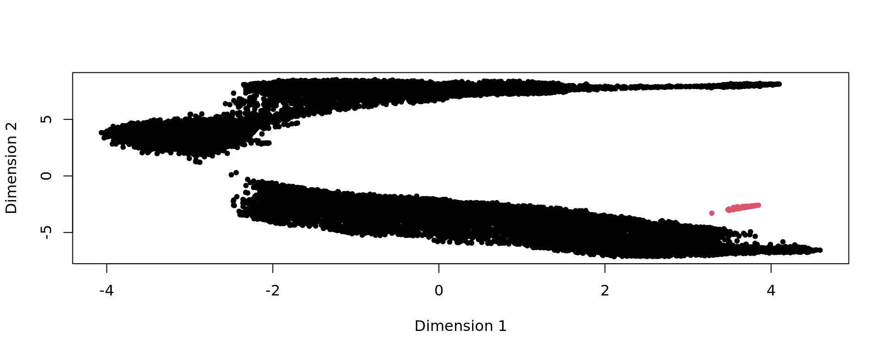
cols_cluster <- c("#0000b6", "#f2cc8f", "#33b233")
plot_slide(xy,as.factor(samples),clu,col=cols_cluster)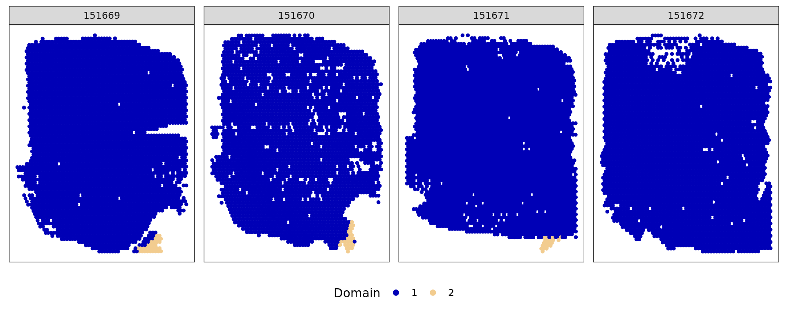
FB=names(which.min(table(clu)))
selFB=clu!=FB
# kk_UMAP=kk_UMAP[selFB,]
# labels=labels[selFB]
# samples=samples[selFB]
# xy=xy[selFB,]
g <- bluster::makeSNNGraph(as.matrix(kk_UMAP[selFB,]), k = graph)
g_walk <- igraph::cluster_walktrap(g)
clu <- as.character(igraph::cut_at(g_walk, no = nclusters))
plot(kk_UMAP[selFB,],pch=20,col=as.factor(clu))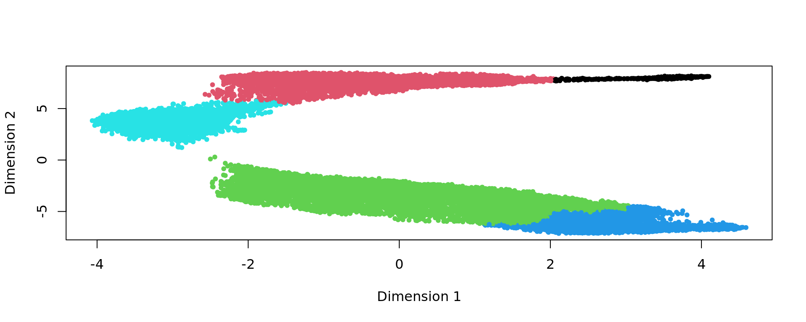
ref=refine_SVM(xy[selFB,],clu,samples[selFB],cost=100)[1] "151669"
[1] "151670"
[1] "151671"
[1] "151672"u=unique(samples[selFB])
for(j in u){
sel=samples[selFB]==j
print(mclust::adjustedRandIndex(labels[selFB][sel],ref[sel]))
}[1] 0.4477444
[1] 0.4141171
[1] 0.6394442
[1] 0.633552 ###########
cols_cluster <- c("#0000b6", "#81b29a", "#f2cc8f","#e07a5f",
"#cc00b6", "#81ccff", "#33b233")
plot_slide(xy,samples,labels,col=cols_cluster)
plot_slide(xy[selFB,],samples[selFB],ref,col=cols_cluster)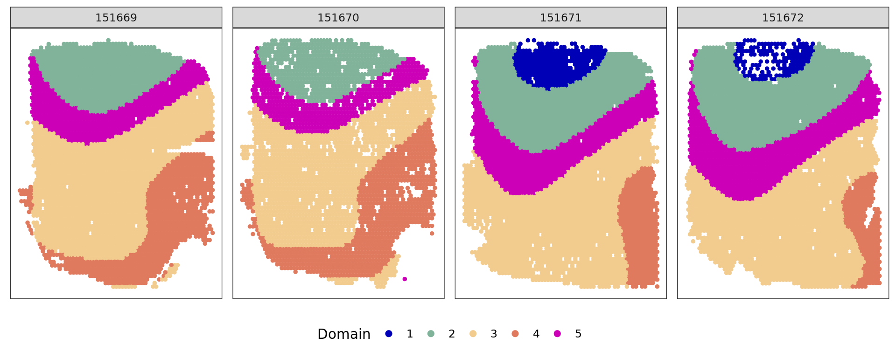
kk_UMAP_Br5595=kk_UMAP
samples_Br5595=samples
xy_Br5595=xy
labels_Br5595=labels
subject_names_Br5595=subject_names
ref_Br5595=ref
clu_Br5595=clu
save(kk_UMAP_Br5595,samples_Br5595,xy_Br5595,labels_Br5595,subject_names_Br5595,ref_Br5595,clu_Br5595,selFB,file="output/DLFPC-Br5595.RData")
save(data_Br5595,pca_Br5595,samples_Br5595,xy_Br5595,labels_Br5595,subject_names_Br5595,selFB,file="data/DLFPC-Br5595-input.RData")Patient Br5292
subject_names="Br5292"
nclusters=7
spe_sub <- spe[, colData(spe)$subject == subject_names]
dim(spe_sub)[1] 6623 17734# spe_sub <- runPCA(spe_sub, 50,subset_row = top[1:gene_number], scale=TRUE)
#pca=reducedDim(spe_sub,type = "PCA")[,1:50]
spe_sub <- spe[, colData(spe)$subject == subject_names]
sel= subjects == subject_names
data_Br5292=data[sel,top[1:gene_number]]
RNA.scaled=scale(data_Br5292)
pca_results <- irlba(A = RNA.scaled, nv = 50)
pca_Br5292 <- pca_results$u %*% diag(pca_results$d)[,1:50]
rownames(pca_Br5292)=rownames(data_Br5292)
colnames(pca_Br5292)=paste("PC",1:50,sep="")
labels=as.factor(colData(spe_sub)$layer_guess_reordered)
names(labels)=rownames(colData(spe_sub))
xy=as.matrix(spatialCoords(spe_sub))
rownames(xy)=rownames(colData(spe_sub))
samples=colData(spe_sub)$sample_id
plot(pca_Br5292, pch=20,col=as.factor(colData(spe_sub)$sample_id))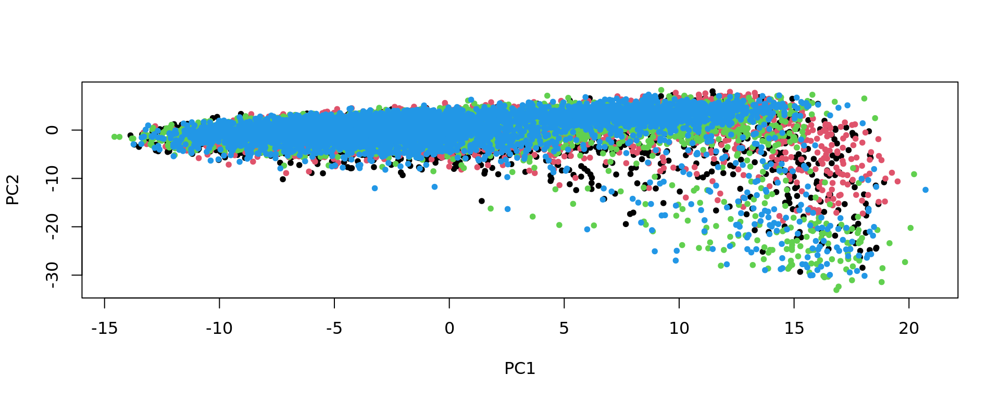
KODAMA analysis
set.seed(seed)
kk=KODAMA.matrix.parallel(pca_Br5292,
spatial = xy,
samples=samples,
FUN= "fastpls" ,
landmarks = 100000,
splitting = splitting,
ncomp = 50,
spatial.resolution = spatial.resolution,
n.cores=n.cores,
seed = seed)Calculating Network
Calculating Network spatial
socket cluster with 40 nodes on host 'localhost'
================================================================================
Finished parallel computation
[1] "Calculation of dissimilarity matrix..."
================================================================================ print("KODAMA finished")[1] "KODAMA finished" config=umap.defaults
config$n_threads = n.cores
config$n_sgd_threads = "auto"
kk_UMAP=KODAMA.visualization(kk,method="UMAP",config=config)
plot(kk_UMAP,pch=20,col=as.factor(labels))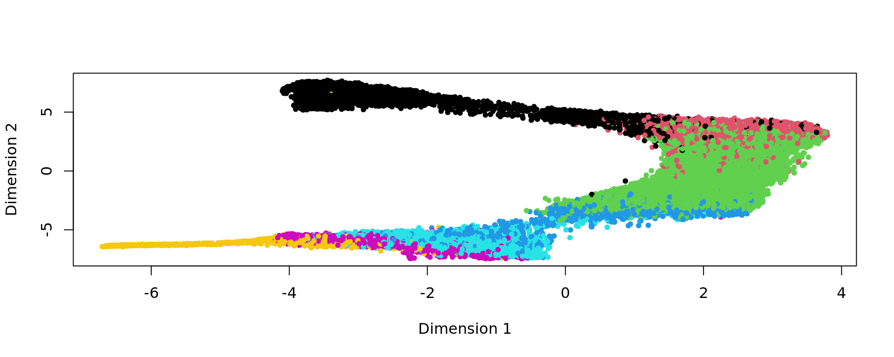
Graph-based clustering
# Graph-based clustering
g <- bluster::makeSNNGraph(as.matrix(kk_UMAP), k = graph)
g_walk <- igraph::cluster_walktrap(g)
clu <- as.character(igraph::cut_at(g_walk, no = nclusters))
plot(kk_UMAP,pch=20,col=as.factor(clu))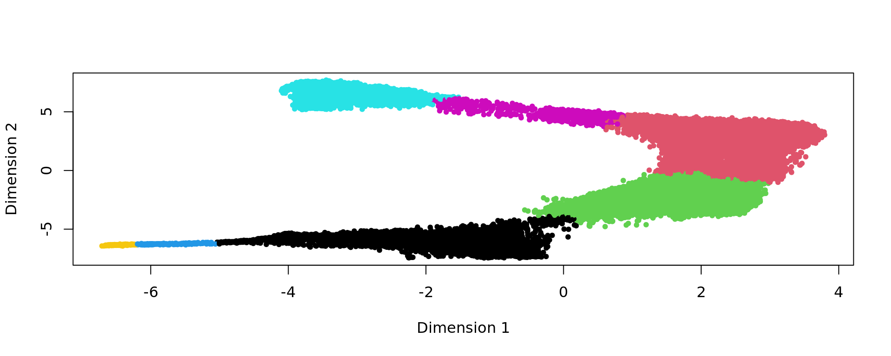
ref=refine_SVM(xy,clu,samples,cost=100)[1] "151507"
[1] "151508"
[1] "151509"
[1] "151510" u=unique(samples)
for(j in u){
sel=samples==j
print(mclust::adjustedRandIndex(labels[sel],ref[sel]))
}[1] 0.4297272
[1] 0.4651627
[1] 0.4296412
[1] 0.4018781 ###########
g <- bluster::makeSNNGraph(as.matrix(kk_UMAP), k = graph)
g_walk <- igraph::cluster_walktrap(g)
clu <- as.character(igraph::cut_at(g_walk, no = nclusters))
ref=refine_SVM(xy,clu,samples,cost=100)[1] "151507"
[1] "151508"
[1] "151509"
[1] "151510" u=unique(samples)
for(j in u){
sel=samples==j
print(mclust::adjustedRandIndex(labels[sel],ref[sel]))
}[1] 0.4297272
[1] 0.4651627
[1] 0.4296412
[1] 0.4018781 ###########
cols_cluster <- c("#0000b6", "#81b29a", "#f2cc8f","#e07a5f",
"#cc00b6", "#81ccff", "#33b233")
plot_slide(xy,samples,labels,col=cols_cluster)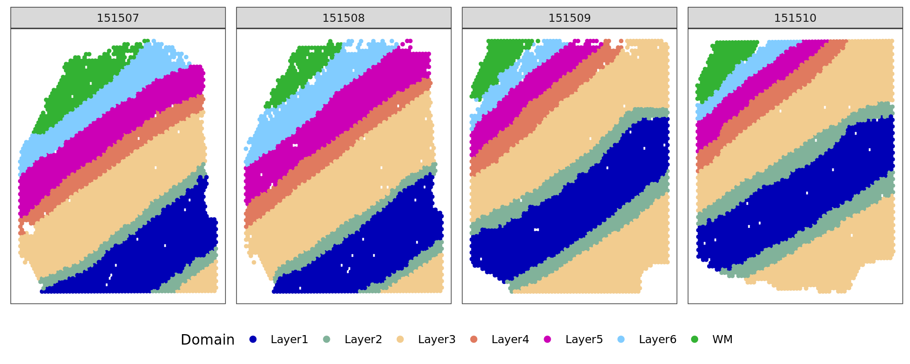
plot_slide(xy,samples,ref,col=cols_cluster)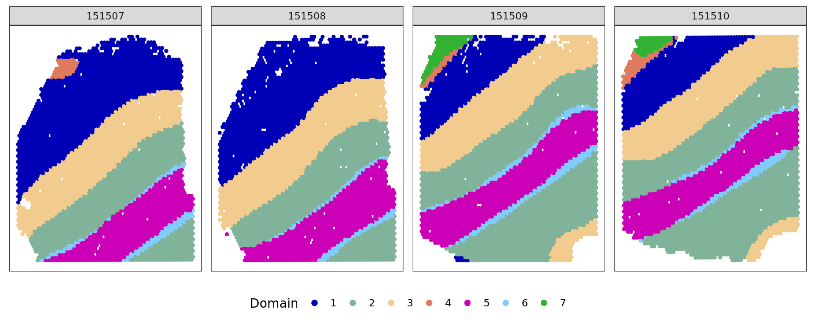
kk_UMAP_Br5292=kk_UMAP
samples_Br5292=samples
xy_Br5292=xy
labels_Br5292=labels
subject_names_Br5292=subject_names
ref_Br5292=ref
clu_Br5292=clu
save(kk_UMAP_Br5292,pca_Br5292,samples_Br5292,xy_Br5292,subject_names_Br5292,labels_Br5292,ref_Br5292,clu_Br5292,file="output/DLFPC-Br5292.RData")
save(data_Br5292,pca_Br5292,samples_Br5292,xy_Br5292,labels_Br5292,subject_names_Br5292,file="data/DLFPC-Br5292-input.RData")Patient Br8100
subject_names="Br8100"
nclusters=7
spe_sub <- spe[, colData(spe)$subject == subject_names]
dim(spe_sub)[1] 6623 13938# spe_sub <- runPCA(spe_sub, 50,subset_row = top[1:gene_number], scale=TRUE)
#pca=reducedDim(spe_sub,type = "PCA")[,1:50]
spe_sub <- spe[, colData(spe)$subject == subject_names]
sel= subjects == subject_names
data_Br8100=data[sel,top[1:gene_number]]
RNA.scaled=scale(data_Br8100)
pca_results <- irlba(A = RNA.scaled, nv = 50)
pca_Br8100 <- pca_results$u %*% diag(pca_results$d)[,1:50]
rownames(pca_Br8100)=rownames(data_Br8100)
colnames(pca_Br8100)=paste("PC",1:50,sep="")
labels=as.factor(colData(spe_sub)$layer_guess_reordered)
names(labels)=rownames(colData(spe_sub))
xy=as.matrix(spatialCoords(spe_sub))
rownames(xy)=rownames(colData(spe_sub))
samples=colData(spe_sub)$sample_id
plot(pca_Br8100, pch=20,col=as.factor(colData(spe_sub)$sample_id))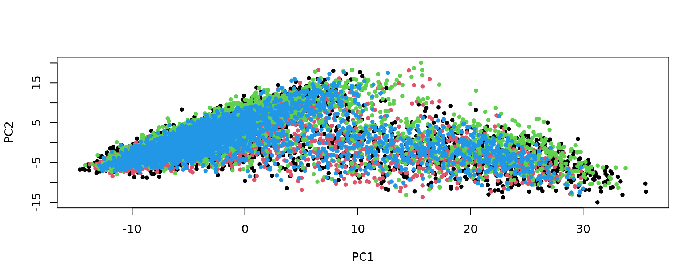
KODAMA analysis
set.seed(seed)
kk=KODAMA.matrix.parallel(pca_Br8100,
spatial = xy,
samples=samples,
FUN= "fastpls" ,
landmarks = 100000,
splitting = splitting,
ncomp = 50,
spatial.resolution = spatial.resolution,
n.cores=n.cores,
seed = seed)Calculating Network
Calculating Network spatial
socket cluster with 40 nodes on host 'localhost'
================================================================================
Finished parallel computation
[1] "Calculation of dissimilarity matrix..."
================================================================================ print("KODAMA finished")[1] "KODAMA finished" config=umap.defaults
config$n_threads = n.cores
config$n_sgd_threads = "auto"
kk_UMAP=KODAMA.visualization(kk,method="UMAP",config=config)
plot(kk_UMAP,pch=20,col=as.factor(labels))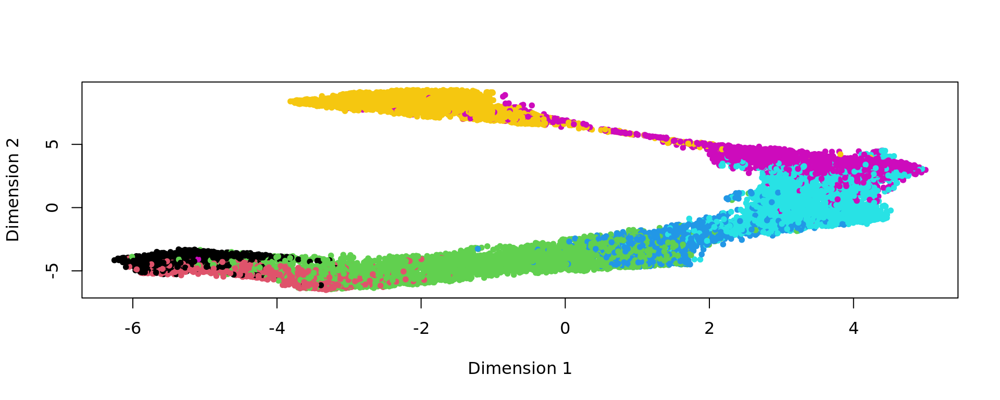
Graph-based clustering
# Graph-based clustering
g <- bluster::makeSNNGraph(as.matrix(kk_UMAP), k = graph)
g_walk <- igraph::cluster_walktrap(g)
clu <- as.character(igraph::cut_at(g_walk, no = nclusters))
ref=refine_SVM(xy,clu,samples,cost=100)[1] "151673"
[1] "151674"
[1] "151675"
[1] "151676" u=unique(samples)
for(j in u){
sel=samples==j
print(mclust::adjustedRandIndex(labels[sel],ref[sel]))
}[1] 0.5132969
[1] 0.4876644
[1] 0.5410075
[1] 0.5148034 ###########
g <- bluster::makeSNNGraph(as.matrix(kk_UMAP), k = graph)
g_walk <- igraph::cluster_walktrap(g)
clu <- as.character(igraph::cut_at(g_walk, no = nclusters))
plot(kk_UMAP,pch=20,col=as.factor(clu))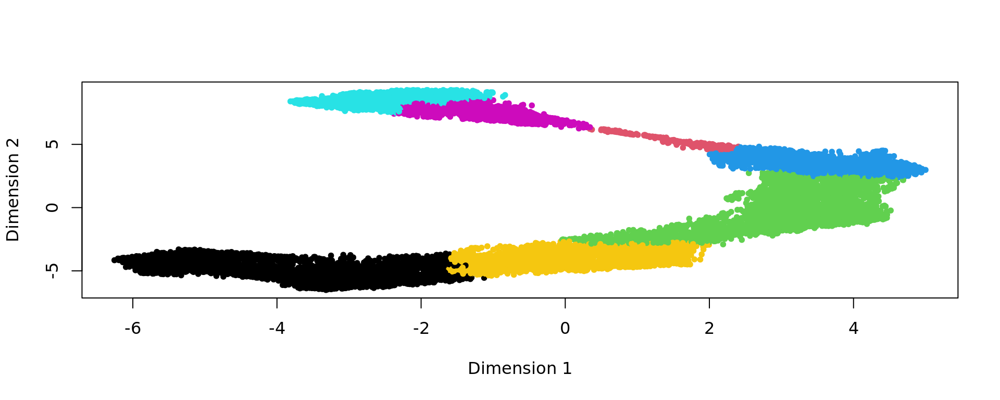
ref=refine_SVM(xy,clu,samples,cost=100)[1] "151673"
[1] "151674"
[1] "151675"
[1] "151676" u=unique(samples)
for(j in u){
sel=samples==j
print(mclust::adjustedRandIndex(labels[sel],ref[sel]))
}[1] 0.5132969
[1] 0.4876644
[1] 0.5410075
[1] 0.5148034 ###########
cols_cluster <- c("#0000b6", "#81b29a", "#f2cc8f","#e07a5f",
"#cc00b6", "#81ccff", "#33b233")
plot_slide(xy,samples,labels,col=cols_cluster)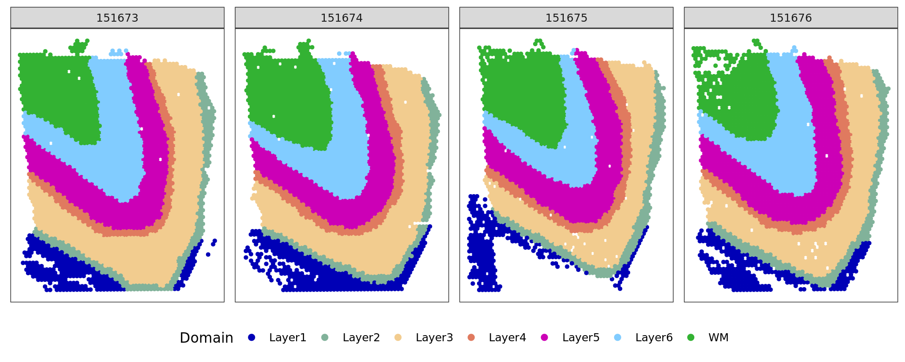
plot_slide(xy,samples,ref,col=cols_cluster)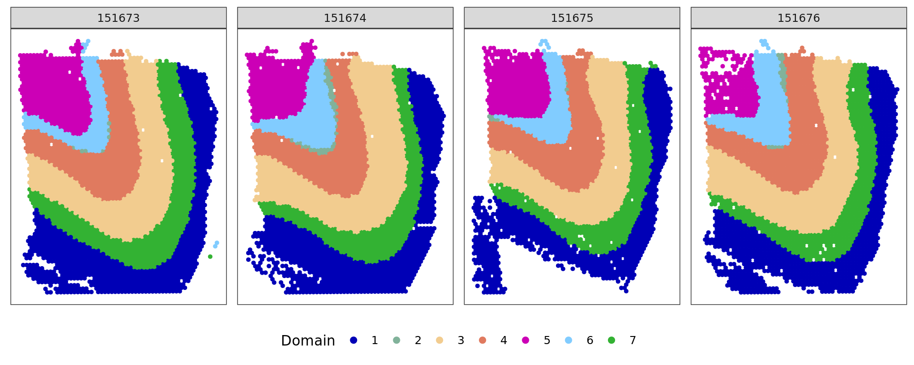
kk_UMAP_Br8100=kk_UMAP
samples_Br8100=samples
xy_Br8100=xy
labels_Br8100=labels
subject_names_Br8100=subject_names
ref_Br8100=ref
clu_Br8100=clu
save(kk_UMAP_Br8100,pca_Br8100,samples_Br8100,xy_Br8100,subject_names_Br8100,labels_Br8100,ref_Br8100,clu_Br8100,file="output/DLFPC-Br8100.RData")
save(data_Br8100,pca_Br8100,samples_Br8100,xy_Br8100,labels_Br8100,subject_names_Br8100,file="data/DLFPC-Br8100-input.RData")Saving the results
results_KODAMA <- list()
results_KODAMA$clusters <- list()
results_KODAMA$labels <- list()
results_KODAMA$feature_extraction <- list()
results_KODAMA$xy <- list()
results_KODAMA$clusters=c(results_KODAMA$clusters,tapply(ref_Br5292,samples_Br5292,function(x) x))
results_KODAMA$clusters=c(results_KODAMA$clusters,tapply(ref_Br5595,samples_Br5595[selFB],function(x) x))
results_KODAMA$clusters=c(results_KODAMA$clusters,tapply(ref_Br8100,samples_Br8100,function(x) x))
results_KODAMA$labels=c(results_KODAMA$labels,tapply(labels_Br5292,samples_Br5292,function(x) x))
results_KODAMA$labels=c(results_KODAMA$labels,tapply(labels_Br5595[selFB],samples_Br5595[selFB],function(x) x))
results_KODAMA$labels=c(results_KODAMA$labels,tapply(labels_Br8100,samples_Br8100,function(x) x))
results_KODAMA$feature_extraction=c(results_KODAMA$feature_extraction,by(kk_UMAP_Br5292,samples_Br5292,function(x) x))
results_KODAMA$feature_extraction=c(results_KODAMA$feature_extraction,by(kk_UMAP_Br5595[selFB,],samples_Br5595[selFB],function(x) x))
results_KODAMA$feature_extraction=c(results_KODAMA$feature_extraction,by(kk_UMAP_Br8100,samples_Br8100,function(x) x))
results_KODAMA$xy=c(results_KODAMA$xy,by(xy_Br5292,samples_Br5292,function(x) x))
results_KODAMA$xy=c(results_KODAMA$xy,by(xy_Br5595[selFB,],samples_Br5595[selFB],function(x) x))
results_KODAMA$xy=c(results_KODAMA$xy,by(xy_Br8100,samples_Br8100,function(x) x))
save(results_KODAMA,file="output/KODAMA-results.RData")
sessionInfo()R version 4.4.1 (2024-06-14)
Platform: x86_64-pc-linux-gnu
Running under: Ubuntu 20.04.6 LTS
Matrix products: default
BLAS: /usr/lib/x86_64-linux-gnu/blas/libblas.so.3.9.0
LAPACK: /usr/lib/x86_64-linux-gnu/lapack/liblapack.so.3.9.0
locale:
[1] LC_CTYPE=en_US.UTF-8 LC_NUMERIC=C
[3] LC_TIME=en_US.UTF-8 LC_COLLATE=en_US.UTF-8
[5] LC_MONETARY=en_US.UTF-8 LC_MESSAGES=en_US.UTF-8
[7] LC_PAPER=en_US.UTF-8 LC_NAME=C
[9] LC_ADDRESS=C LC_TELEPHONE=C
[11] LC_MEASUREMENT=en_US.UTF-8 LC_IDENTIFICATION=C
time zone: Etc/UTC
tzcode source: system (glibc)
attached base packages:
[1] parallel stats4 stats graphics grDevices utils datasets
[8] methods base
other attached packages:
[1] irlba_2.3.5.1 slingshot_2.12.0
[3] TrajectoryUtils_1.12.0 princurve_2.1.6
[5] mclust_6.1.1 KODAMAextra_1.2
[7] e1071_1.7-16 doParallel_1.0.17
[9] iterators_1.0.14 foreach_1.5.2
[11] KODAMA_4.0 Matrix_1.7-1
[13] umap_0.2.10.0 Rtsne_0.17
[15] minerva_1.5.10 spatialLIBD_1.16.2
[17] SpatialExperiment_1.14.0 Seurat_5.1.0
[19] SeuratObject_5.0.2 sp_2.1-4
[21] harmony_1.2.3 Rcpp_1.0.13-1
[23] SPARK_1.1.1 scry_1.16.0
[25] scran_1.32.0 scater_1.32.1
[27] ggplot2_3.5.1 scuttle_1.14.0
[29] SingleCellExperiment_1.26.0 SummarizedExperiment_1.34.0
[31] Biobase_2.64.0 GenomicRanges_1.56.2
[33] GenomeInfoDb_1.40.1 IRanges_2.38.1
[35] S4Vectors_0.42.1 BiocGenerics_0.50.0
[37] MatrixGenerics_1.16.0 matrixStats_1.4.1
[39] nnSVG_1.8.0 workflowr_1.7.1
loaded via a namespace (and not attached):
[1] goftest_1.2-3 DT_0.33
[3] Biostrings_2.72.1 vctrs_0.6.5
[5] spatstat.random_3.3-2 digest_0.6.37
[7] png_0.1-8 proxy_0.4-27
[9] git2r_0.33.0 ggrepel_0.9.6
[11] deldir_2.0-4 parallelly_1.40.1
[13] Rnanoflann_0.0.3 magick_2.8.4
[15] MASS_7.3-61 reshape2_1.4.4
[17] httpuv_1.6.15 withr_3.0.1
[19] xfun_0.49 survival_3.7-0
[21] memoise_2.0.1 benchmarkme_1.0.8
[23] ggbeeswarm_0.7.2 zoo_1.8-12
[25] pbapply_1.7-2 rematch2_2.1.2
[27] KEGGREST_1.44.1 promises_1.3.1
[29] httr_1.4.7 restfulr_0.0.15
[31] globals_0.16.3 fitdistrplus_1.2-1
[33] ps_1.8.1 rstudioapi_0.17.1
[35] UCSC.utils_1.0.0 miniUI_0.1.1.1
[37] generics_0.1.3 processx_3.8.4
[39] curl_6.0.1 fields_16.3
[41] zlibbioc_1.50.0 ScaledMatrix_1.12.0
[43] polyclip_1.10-7 doSNOW_1.0.20
[45] GenomeInfoDbData_1.2.12 ExperimentHub_2.12.0
[47] SparseArray_1.4.8 golem_0.5.1
[49] xtable_1.8-4 stringr_1.5.1
[51] pracma_2.4.4 evaluate_1.0.1
[53] S4Arrays_1.4.1 BiocFileCache_2.12.0
[55] colorspace_2.1-1 filelock_1.0.3
[57] ROCR_1.0-11 reticulate_1.38.0
[59] spatstat.data_3.1-4 shinyWidgets_0.8.7
[61] magrittr_2.0.3 lmtest_0.9-40
[63] later_1.4.0 viridis_0.6.5
[65] lattice_0.22-6 misc3d_0.9-1
[67] spatstat.geom_3.3-4 future.apply_1.11.3
[69] getPass_0.2-4 scattermore_1.2
[71] XML_3.99-0.17 cowplot_1.1.3
[73] RcppAnnoy_0.0.22 class_7.3-22
[75] pillar_1.9.0 nlme_3.1-166
[77] compiler_4.4.1 beachmat_2.20.0
[79] RSpectra_0.16-2 stringi_1.8.4
[81] tensor_1.5 GenomicAlignments_1.40.0
[83] plyr_1.8.9 crayon_1.5.3
[85] abind_1.4-8 BiocIO_1.14.0
[87] locfit_1.5-9.10 bit_4.5.0.1
[89] dplyr_1.1.4 whisker_0.4.1
[91] codetools_0.2-20 BiocSingular_1.20.0
[93] openssl_2.2.2 bslib_0.8.0
[95] paletteer_1.6.0 plotly_4.10.4
[97] mime_0.12 splines_4.4.1
[99] fastDummies_1.7.4 dbplyr_2.5.0
[101] sparseMatrixStats_1.16.0 attempt_0.3.1
[103] knitr_1.49 blob_1.2.4
[105] utf8_1.2.4 BiocVersion_3.19.1
[107] fs_1.6.5 listenv_0.9.1
[109] DelayedMatrixStats_1.26.0 rdist_0.0.5
[111] tibble_3.2.1 callr_3.7.6
[113] statmod_1.5.0 pkgconfig_2.0.3
[115] tools_4.4.1 BRISC_1.0.6
[117] cachem_1.1.0 RSQLite_2.3.9
[119] viridisLite_0.4.2 DBI_1.2.3
[121] fastmap_1.2.0 rmarkdown_2.29
[123] scales_1.3.0 grid_4.4.1
[125] ica_1.0-3 Rsamtools_2.20.0
[127] AnnotationHub_3.12.0 sass_0.4.9
[129] patchwork_1.3.0 BiocManager_1.30.25
[131] dotCall64_1.2 RANN_2.6.2
[133] snow_0.4-4 farver_2.1.2
[135] yaml_2.3.10 rtracklayer_1.64.0
[137] cli_3.6.3 purrr_1.0.2
[139] leiden_0.4.3.1 lifecycle_1.0.4
[141] askpass_1.2.1 uwot_0.2.2
[143] bluster_1.14.0 sessioninfo_1.2.2
[145] BiocParallel_1.38.0 gtable_0.3.5
[147] rjson_0.2.23 ggridges_0.5.6
[149] progressr_0.14.0 limma_3.60.3
[151] jsonlite_1.8.9 edgeR_4.2.2
[153] RcppHNSW_0.6.0 bitops_1.0-9
[155] benchmarkmeData_1.0.4 bit64_4.5.2
[157] spatstat.utils_3.1-1 BiocNeighbors_1.22.0
[159] matlab_1.0.4.1 jquerylib_0.1.4
[161] metapod_1.12.0 config_0.3.2
[163] dqrng_0.4.1 spatstat.univar_3.1-1
[165] lazyeval_0.2.2 shiny_1.9.1
[167] htmltools_0.5.8.1 sctransform_0.4.1
[169] rappdirs_0.3.3 glue_1.8.0
[171] tcltk_4.4.1 spam_2.11-0
[173] XVector_0.44.0 RCurl_1.98-1.16
[175] rprojroot_2.0.4 gridExtra_2.3
[177] igraph_2.0.3 R6_2.5.1
[179] tidyr_1.3.1 labeling_0.4.3
[181] CompQuadForm_1.4.3 cluster_2.1.6
[183] DelayedArray_0.30.1 tidyselect_1.2.1
[185] vipor_0.4.7 maps_3.4.2.1
[187] AnnotationDbi_1.66.0 future_1.34.0
[189] rsvd_1.0.5 munsell_0.5.1
[191] KernSmooth_2.23-24 data.table_1.15.4
[193] htmlwidgets_1.6.4 RColorBrewer_1.1-3
[195] rlang_1.1.4 spatstat.sparse_3.1-0
[197] spatstat.explore_3.3-3 fansi_1.0.6
[199] beeswarm_0.4.0